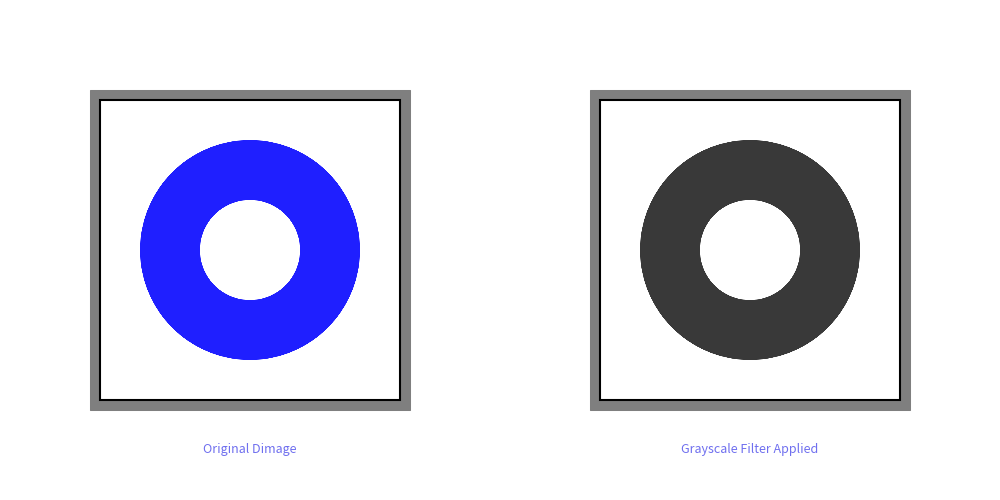
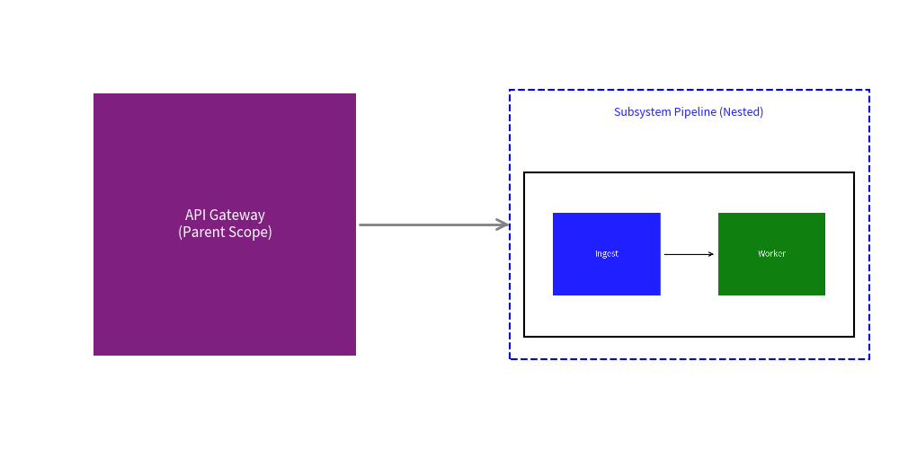
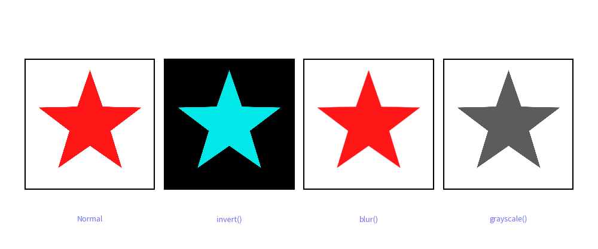

Rendering from Code (get_dimage_from_code)
The get_dimage_from_code() function executes a Drawlib Python code snippet in an isolated subprocess and returns the rendered output as a Dimage object.
This allows programmatic diagram composition, nesting diagrams inside larger architectures, applying bitmap image filters (such as blur, grayscale, or inversion) to vector illustrations, and dynamically previewing code snippets.
1. Function Overview
from drawlib.images import Dimage, get_dimage_from_code
dimg: Dimage = get_dimage_from_code(
code: str,
timeout: float | None = None,
)
| Parameter | Type | Default | Description |
|---|---|---|---|
code |
str |
required | Python source code string containing Drawlib drawing operations. |
timeout |
float | None |
None |
Maximum execution time in seconds. If exceeded, the worker process is terminated and a TimeoutError is raised. |
Returns:
Dimage: An image data object representing the rendered canvas output.
2. Key Architecture & Benefits
2.1 Complete Process Isolation
Unlike standard function calls that share the global Python interpreter and Matplotlib state, get_dimage_from_code() spawns an independent child process via multiprocessing.
- The parent canvas's artist list, dimensions, and active preset styles remain completely untouched.
- The child code can define its own canvas size, background color, and styling without leaking into the surrounding context.
2.2 Automatic save() Interception
If the provided code string contains a save() call (such as code copied directly from standalone scripts), the subprocess safely intercepts the save operation and redirects the rendered pixels to an in-memory buffer. No files are written to the filesystem.
2.3 Safe Timeout Management
When executing untrusted or dynamically generated drawing code, setting timeout guarantees that infinite loops or heavy computations are safely killed before blocking the main application.
3. Practical Usage Examples
3.1 Basic Subprocess Rendering
In this example, an independent circular illustration is defined as a code snippet, rendered into a Dimage, and placed onto the main canvas.
from drawlib.canvas import config
from drawlib.images import get_dimage_from_code, image
from drawlib.shapes import rectangle
from drawlib.text import text
config(width=100, height=50)
# 1. Define child drawing code
child_code = """
from drawlib.canvas import config
from drawlib.shapes import circle
config(width=60, height=60)
circle((30, 30), radius=22, style="blue_flat")
circle((30, 30), radius=10, style="white_flat")
"""
# 2. Render code in an isolated subprocess
nested_dimage = get_dimage_from_code(child_code)
# 3. Draw onto parent canvas
rectangle((25, 25), width=32, height=32, style="gray_light")
image((25, 25), width=30, image=nested_dimage)
text((25, 5), "Original Dimage", size=9)
rectangle((75, 25), width=32, height=32, style="gray_light")
image((75, 25), width=30, image=nested_dimage.grayscale())
text((75, 5), "Grayscale Filter Applied", size=9)

3.2 Diagram Composition (Picture-in-Picture)
You can nest a detailed sub-diagram inside a larger architectural overview without coordinating coordinate grids across both scopes.
from drawlib.canvas import config
from drawlib.colors import Colors
from drawlib.images import get_dimage_from_code, image
from drawlib.lines import line
from drawlib.shapes import rectangle
from drawlib.text import text
from drawlib.types import Style
config(width=120, height=60)
# Microservice pipeline snippet rendered as a standalone unit
pipeline_code = """
from drawlib.canvas import config
from drawlib.lines import line
from drawlib.shapes import rectangle
config(width=80, height=40)
rectangle((20, 20), width=26, height=20, style="blue_flat", text="Ingest", textsize=18, textstyle="white")
line((34, 20), (46, 20), arrowhead="->", style="bold")
rectangle((60, 20), width=26, height=20, style="green_flat", text="Worker", textsize=18, textstyle="white")
"""
sub_diagram = get_dimage_from_code(pipeline_code)
# Main Architecture Canvas
rectangle(
(30, 30),
width=35,
height=35,
style="purple_flat",
text="API Gateway\n(Parent Scope)",
textstyle=Style(text_color=Colors.White, text_size=11),
)
line((48, 30), (68, 30), arrowhead="->", style=Style(line_width=2, line_color=Colors.Gray))
# Frame for the nested diagram
rectangle((92, 30), width=48, height=36, style=Style(fill_color=Colors.White, line_color=Colors.Blue, line_style="dashed", line_width=1.5))
text((92, 45), "Subsystem Pipeline (Nested)", size=9, style="blue")
image((92, 26), width=44, image=sub_diagram)

3.3 Applying Image Filters to Vector Drawings
Because get_dimage_from_code() produces a Dimage object, you can apply any Dimage raster transformations—such as .blur(), .invert(), or .brightness()—to native Drawlib vector illustrations.
from drawlib.canvas import config
from drawlib.images import get_dimage_from_code, image
from drawlib.text import text
config(width=120, height=50)
# Generate a high-contrast logo vector
logo_code = """
from drawlib.canvas import config
from drawlib.shapes import star
config(width=60, height=60)
star((30, 30), num_vertex=5, radius_ext=25, radius_int=10, style="red_flat")
"""
logo = get_dimage_from_code(logo_code)
# 1. Normal
image((18, 25), width=26, image=logo)
text((18, 6), "Normal", size=9)
# 2. Inverted
image((46, 25), width=26, image=logo.invert())
text((46, 6), "invert()", size=9)
# 3. Blurred
image((74, 25), width=26, image=logo.blur())
text((74, 6), "blur()", size=9)
# 4. Grayscale
image((102, 25), width=26, image=logo.grayscale())
text((102, 6), "grayscale()", size=9)

3.4 Error & Timeout Handling
When running dynamic user code or batch processing scripts, wrap get_dimage_from_code() with standard Python exception handling:
from drawlib.images import get_dimage_from_code
code = """
import time
from drawlib.shapes import circle
# Infinite loop or slow calculation:
time.sleep(5)
circle((50, 50), radius=20)
"""
try:
dimg = get_dimage_from_code(code, timeout=1.0)
except TimeoutError:
print("Execution exceeded timeout limit (1.0s). Subprocess terminated.")
except RuntimeError as err:
print(f"Drawing code execution failed: {err}")
© 2026 drawlib by Yuichi Ito. Released under the Apache 2.0 License.